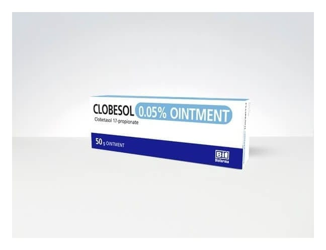

Clobesol % 0,05 MERHEM,50 Gram

Ne için kullanılır
KT · Bölüm 1CLOBESOL topikal steroidler denilen ve cilde sürülen bir ilaç grubunun üyesidir. Topikal steroidler belirli cilt problemlerindeki kaşıntı ve kızarıklığı azaltırlar. CLOBESOL merhem formunda, 50 g’lık tüplerde bulunmaktadır. CLOBESOL diskoid lupus eritematozus (genellikle yüzde görülen plaklar-bir çeşit deri hastalığı), liken planus (deri, deri ekleri ve mukozaları etkileyen iyi huylu deri hastalığı), sedef hastalığı (psöriyazis) ve zor tedavi edilen dermatozlar (deri hastalıkları) gibi cilt problemlerinde iltihabın etkilerini azaltmak için kullanılır.